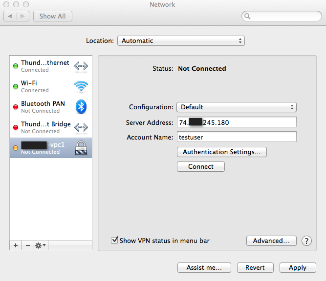
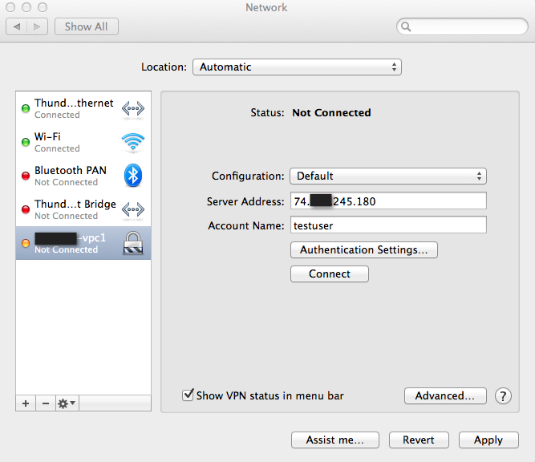
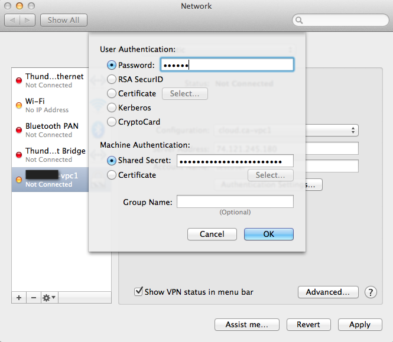

Warning
NOTICE: THIS DOCUMENTATION SITE HAS BEEN SUPERSEDED.
For the current documentation site goto: http://docs.cloudstack.apache.org
Using Remote Access VPN¶
Remote Access VPN connection to VPC or Guest Network to access Instances and applications. This section consider you have enable Remonte acccess VPN, refer to: Remote Access VPN.
When connected to a VPC via VPN, the client have access to all Tiers.
Following information is required to confiture VPN client:
Public IP: source NAT with VPN enabled.IPsec pre-shared key: Provide at the VPN activation.UsernameVPN account username.PasswordVPN account password.
Mac OSX¶
Mac OSX provide native IPsec VPN client.
Into System Preferences -> Network
Click “+” button and add a VPN:
- Interface: VPN
- VPN Type: L2TP over IPSec
- Service Name: (ex: test-vpc1)

Configure L2TP over IPsec
 

Inside Authentication Settings…
Connect into VPN
Click Apply to apply Network configuration changes.
Click Connect to initiate VPN connection.

Microsoft Windows¶
Following instruction have been perform using Windows 8.1 using Native VPN client.


{kind=link}
{kind=link}
{kind=link}
{kind=link}
{kind=link}
{kind=link}
{kind=link}
{kind=link}
{kind=link}
{kind=link}
{kind=link}
{kind=link}
{kind=link}